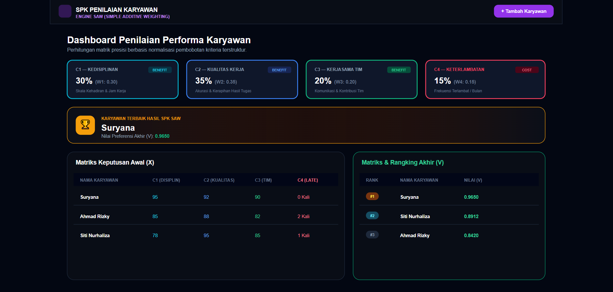

SURYANA
Pekerja Frofesional dengan 4+ tahun pengalaman di bidang administrasi distribusi, data entry, dan operasional. Spesialisasi utama: Data Entry, Administrasi Perusahaan, Excel & Data Cleaning. Dilengkapi keahlian pendukung: Web Development (Laravel, Tailwind), UI/UX Design, dan IT Support (MikroTik, Fiber Optic). Terbiasa bekerja mandiri, terstruktur, dan mengutamakan akurasi serta kerahasiaan data. Siap untuk full-time, part-time, freelance, dan WFH remote.

SURYANA
S1 Sistem Informasi — UNPAM
Remote WFH · Freelance · On-Site
WFH Data Entry & Administrasi Distributor
Menggabungkan 4+ tahun pengalaman operasional di PT. Sinergi Multi Distrindo dengan dasar akademik S1 Sistem Informasi. Mahir mengerjakan tugas Data Entry WFH secara mandiri, teratur, dan menjaga kerahasiaan data perusahaan. Terampil dalam pengolahan data Delivery Order, rekap stok, dan laporan berkala dengan tingkat akurasi tinggi.
Pengolahan & Cleaning Data Excel
Menguasai VLOOKUP/XLOOKUP, INDEX/MATCH, Pivot Table, Conditional Formatting, deduplikasi data, dan perapihan format mentah.
Konversi PDF & OCR
Ekstraksi data dari file PDF, scan dokumen, dan gambar menjadi spreadsheet Excel/CSV dengan tingkat akurasi tinggi.
Web Research & Google Workspace
Pencarian data spesifik, update database CRM/ERP, pengisian formulir online, dan kolaborasi real-time via Google Drive/Sheets.
Pengalaman Lapangan Admin Distributor (PT. Sinergi Multi Distrindo):
Jasa Freelance & Solusi Digital
Selain siap bekerja full-time, saya membuka penawaran jasa Freelance Profesional untuk UMKM, Perusahaan, maupun Perorangan yang membutuhkan solusi cepat, rapi, dan bergaransi dalam pengolahan data maupun pengembangan web.
Jasa WFH Data Entry & Automasi Excel
Entry data massal berkecepatan tinggi, pembersihan data mentah, konversi PDF/OCR ke Excel, pembuatan rumus VLOOKUP/Pivot interaktif, rekapitulasi periodik.
Pembuatan Website & Web App Custom
Company Profile, Landing Page, Portal E-Commerce, Sistem Informasi Internal (Absensi, Penggajian, Inventory) berbasis Laravel, PHP, Tailwind CSS.
Desain UI/UX & Redesign Website
Perancangan antarmuka estetis modern (Glassmorphism), responsif di HP/Laptop, serta optimasi pengalaman pengguna (UX) untuk meningkatkan kepercayaan.
Setting Router MikroTik & Jaringan WiFi
Konfigurasi RouterBoard, pembagian Bandwidth (Queue), setting Voucher Hotspot RT/RW Net, instalasi Fiber Optic (FTTH), pembenahan LAN.
Butuh Jasa Freelance Cepat & Bergaransi?
Konsultasikan kebutuhan proyek Anda gratis via WhatsApp.
Teknisi Jaringan & Infrastruktur IT
Pengalaman teknis lapangan sebagai Teknisi Jaringan Sifa.net (2020–2021). Ahli dalam pengerjaan fisik kabeling, konfigurasi router MikroTik, perbaikan sinyal radio, dan perawatan hardware jaringan.
Konfigurasi MikroTik & Router WiFi
Setting dasar RouterBoard, pembagian Bandwidth (Queue), IP Subnetting, konfigurasi Access Point, isolasi jaringan pengguna.
Fiber Optic (FTTH) & Perabelan LAN
Penarikan kabel Fiber Optic, penggunaan Dropcore, crimping kabel UTP (RJ45), labelisasi jalur, dan cable management rak server.
Maintenance & Troubleshooting Lapangan
Pengecekan redaman optik, analisa radio wireless terputus, perbaikan koneksi lambat, dan tanggap darurat gangguan pengguna.
Alur Kerja Terstruktur & Nilai Tambah
Presisi & Bebas Error
Verifikasi ganda data via rumus otomatis Excel untuk mencegah kesalahan fatal pada rekap DO, laporan keuangan, dan data entry.
Dokumentasi Rapi & Sistematis
Setiap pekerjaan – mulai dari penataan IP, arsip perusahaan, hingga inventory hardware – disertai log, skema topologi, dan SOP yang mudah diaudit.
Tanggap Trouble Ticketing
Berpengalaman menangani kendala teknis jaringan secara responsif, mendata trouble log, dan koordinasi dengan vendor/lapangan.
Tahapan Eksekusi Pekerjaan (4 Langkah Terukur)
Audit & Identifikasi
Mengumpulkan data mentah dokumen DO/PDF atau mengidentifikasi fisik lokasi kabel & jaringan yang bermasalah.
Perancangan & Format
Menyusun rumus VLOOKUP/Pivot, validasi struktur tabel data, atau merancang skema IP Subnetting MikroTik.
Implementasi & Eksekusi
Input data cepat (65+ WPM) dengan akurasi 99.9% atau eksekusi fisik crimping LAN, splicing FO, dan setting router.
Pengujian & Serah Terima
Verifikasi ulang angka rekapitulasi, pengujian redaman optik, dan penyajian laporan transparan kepada supervisor/klien.
Simulator Interaktif
Kalkulator Subnetting IP & Alokasi Host
| No. DO | Toko | Ekspedisi | Koli | Status | Aksi |
|---|
Grafik Pengiriman
Simulasi Gaji Pekerja Harian
*Tarif lembur = (Gaji Harian / 8) × 1.5
SPK Penilaian Karyawan (SAW)
Bobot: Disiplin 30% · Kualitas 35% · Kerjasama 20% · Terlambat 15%
1. Matriks Keputusan (X)
| Karyawan | C1 (Disiplin) | C2 (Kualitas) | C3 (Tim) | C4 (Late) | Aksi |
|---|
2. Hasil Perangkingan (V)
| Rank | Nama | Nilai (V) |
|---|
Keahlian Teknis & Soft Skills
Perpaduan hard skill data, web, jaringan, dan soft skill profesional.
Hard Skills
Soft Skills
Web Development
Teknisi Jaringan
AI Tools & Digital Workflow
Menggunakan AI sebagai alat bantu produktivitas untuk mempercepat riset, penyusunan konten, analisis data, debugging, dan pengembangan website. Validasi akhir tetap manual agar hasil akurat dan sesuai kebutuhan pekerjaan.
ChatGPT
Research & Productivity
Membantu brainstorming, merapikan dokumen, analisis kebutuhan, debugging, dan solusi teknis terstruktur.
Google Gemini
Research & Analysis
Eksplorasi ide, perbandingan informasi, analisis materi, dan percepatan pekerjaan digital.
AI Coding Assistant
Development Support
Memahami kode, mencari bug, refactoring, dan mempercepat proses pengembangan.
Canva AI
Visual Content
Membantu pembuatan materi visual, presentasi, dan konten digital untuk komunikasi profesional.
Figma + AI
UI/UX Design
Eksplorasi layout, komponen, user flow, dan prototyping sebelum implementasi web.
Human Verification
Quality Control
Semua output AI diperiksa ulang sebelum digunakan atau diserahkan ke klien/perusahaan.
Portofolio Proyek Terpilih
 Aplikasi Web
Aplikasi Web
Sistem Absensi & Penggajian
Check-in/out geolokasi, rekap absensi, perhitungan gaji & lembur otomatis, pengajuan cuti/izin, slip gaji PDF, dashboard admin, export Excel, dan REST API.
 Company Profile
Company Profile
Website Cahaya Interior
Company profile jasa interior: layanan, galeri portofolio, alur kerja, testimoni, kontak interaktif, dan dark/light mode.
 E-Commerce
E-Commerce
SMART DAILY SHOP
Platform e-commerce menggunakan Odoo untuk pengelolaan katalog produk, transaksi penjualan, dan integrasi bisnis digital.
 Digital Marketplace
Digital Marketplace
Marketplace Sparepart Motor
Website marketplace berbasis Google Sites dengan katalog produk responsif dan mudah diakses.

Sistem Penunjang KeputusanSPK Penilaian Karyawan (SAW)
Sistem pendukung keputusan untuk perangkingan kinerja menggunakan metode Simple Additive Weighting (SAW) berbasis matriks.
Pengalaman Kerja & Pendidikan
Assembling Distributor
PT. Sinergi Multi Distrindo
Packing Distributor
PT. Sinergi Multi Distrindo
Admin Distributor
PT. Sinergi Multi Distrindo
Teknisi Jaringan (Freelance)
Sifa.net (RT/RW Net & Local ISP)
Web Developer & UI Designer (Freelance)
Cahaya Interior & Klien Direct
S1 Sistem Informasi
Universitas Pamulang
Mata Kuliah Utama:
Pendidikan Menengah:
SMK AT-TAHSIN Sukaresmi (2017–2020) — Jurusan Teknik Komputer dan Jaringan
Hubungi Saya
Terbuka untuk penawaran kerja posisi WFH Data Entry Specialist, Admin Perusahaan, Proyek Freelance Web/Data, maupun Teknisi IT Jaringan. Saya siap bergabung secara full-time, part-time, atau project-based, baik remote maupun on-site.
Scan untuk Chat WA Otomatis
Scan QR via kamera HP untuk langsung terhubung ke WhatsApp.
Kirim Pesan / Proyek Freelance
*Pesan akan terbuka di aplikasi email Anda (Gmail/Outlook/dll). Kirim manual dari sana.
Atau hubungi langsung via WhatsApp dengan tombol di atas.
Ringkasan Eksekutif Kualifikasi (HR Quick Scan)
Suryana — S1 Sistem Informasi UNPAM
4+ Tahun Pengalaman · Domisili: Pandeglang, Banten · Siap WFH / Remote / On-Site
- 4+ Tahun Pengolahan Data
- Ketik 65+ WPM, Akurasi 99%
- PDF to Excel, VLOOKUP, Pivot
- Company Profile & Web App
- Laravel, Tailwind, JS
- MikroTik, Fiber Optic